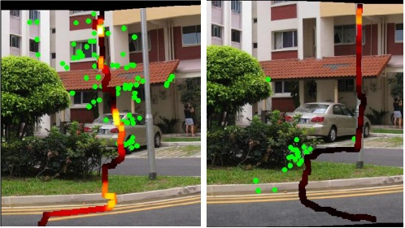

News:
- Looking for a full time research job in computer vision related starting from summer 2015.
Publications:
 |
Yu Li, Fangfang Guo, Robby T. Tan, Michael S. Brown |
 |
Yu Li, Michael S. Brown |
 |
Yu Li, Michael S. Brown |
 |
Fangfang Guo,Yu Li, Mohan Kankanhalli, Michael S. Brown |
|  |
Junhong Gao, Yu Li, Tat-Jun Chin, Michael S. Brown |